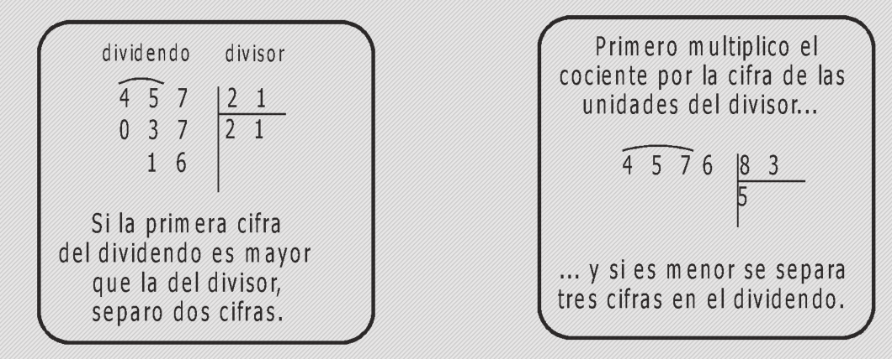

Tema 5 Análisis del residuo en problemas de división que impliquen reparto
En el mundo de las matemáticas debemos siempre resolver situaciones, las matemáticas las usamos para resolver los problemas del día a día.
Ya hemos visto anteriormente las divisiones, y en este módulo vamos a trabajar con el residuo.
El residuo, es lo que queda después de una división y cómo esto afecta la repartición, es decir ya no podemos dividir todo en partes iguales.
Vamos a realizar un ejemplo
En el Museo de Arte de la Ciudad de Puebla hay talleres de escultura para niños todos los jueves. Los talleres duran 90 minutos y se dan desde las 8 de la mañana hasta las 5 de la tarde. Debido a la cantidad de material que hay, existe un límite de 25 personas por taller. El costo del taller es de $30.
La escuela de Roció organiza una excursión al Museo de Arte. En la escuela hay 207 alumnos.
- ¿Cuántos grupos completos se pueden hacer?
- ¿De cuántos alumnos queda el grupo incompleto?
- ¿De cuántas personas debe ser cada grupo para que todos los grupos tengan la misma cantidad de alumnos?
Comenzamos viendo cuántos grupos se pueden formar.
IMAGEN
Esto significa que tenemos 8 grupos de 25 y nos quedan 7 personas.
Entonces tendríamos 9 grupos, 8 completos y uno incompleto.
Pero cómo tener un grupo de 7 personas no es tan práctico entonces hay que intentar hacer grupos del mismo tamaño.
Como ya sabemos que podemos acomodar a todos en 9 grupos entonces intentamos dividir a todos en estos 9 grupos.
Vemos que si dividimos en 9 grupos, obtenemos 23 personas por grupo y no nos queda nadie sobrando.
2 imágenes
Y ¿nos alcanzará el tiempo?
Ya vimos que de una manera u otra podemos acomodar a todos los alumnos en 9 grupos. Pero, solo hay un taller y cada sesión dura 90 minutos, entonces, la pregunta es ¿nos alcanza el tiempo?
Aquí hacemos otra división. Si las horas de operación son de 8 a 5 o dicho de otra manera de 8 a 17 horas entonces las horas de operación son 9 .
9 horas son equivalentes a 540 minutos. Y si cada taller dura 90 minutos entonces
Vemos entonces que tenemos espacio para 6 grupos.